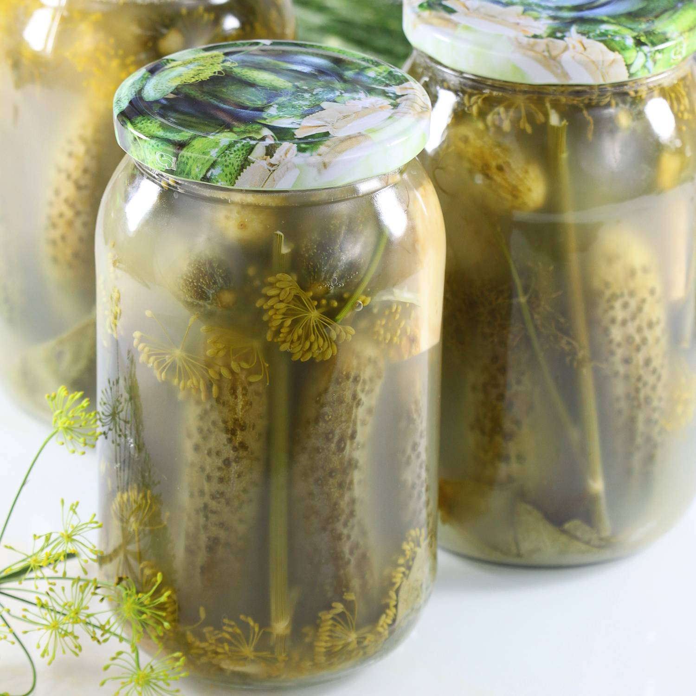

Ogorki Kiszone

Description
Ogórki kiszone is a traditional polish dish, which are just polish
pickles.Below you’ll find the basic process for making one quart of Ogórki
Kiszone
Ingredients
- wide mouth 1 quart jar
- 8 to 10 pickling cucumbers (4–6 inches long), washed and dried
- 2 tablespoons pickling salt or sea salt
- 1 quart water
- 2 teaspoons mustard seeds
- 2 cloves peeled garlic
- 1 stem dill, preferably flowering
- fresh horseradish root, about 1 inch long
- bay leaf
- Cherry, grape, blackcurrant, or oak leaf
Steps
-
Tightly pack the cucumbers into the sterile jar, you want to squeeze
them in, so they’ll stay submerged and not float to the top of the
liquid
- Add the salt to the water and bring to a boil, cool
-
Add the mustard seeds, garlic, dill (fold to fit), horseradish, bay
leaf, and other leaf if you have one
-
Fill the jar with the salt water to within 1/4 from the top, all of your
ingredients should be covered
-
Loosely cap the jar with a sterile lid, the lid must be loose to allow
the gases produced during fermentation to escape, some brine may seep
out, so store where this won’t be a problem
- As it ferments, the brine will become cloudy
-
Depending on your taste, the cucumbers will be ready to eat in 1 to 3
weeks
-
Fermentation will end after 5-6 weeks, if you have any left at this
point, the lids should be tightened to prevent spoilage